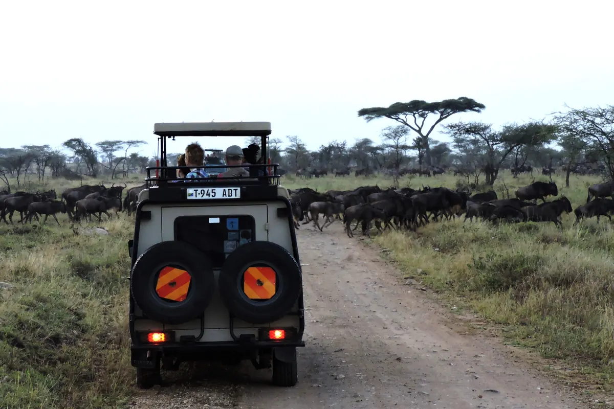
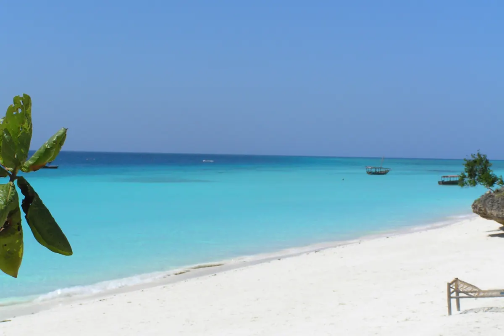
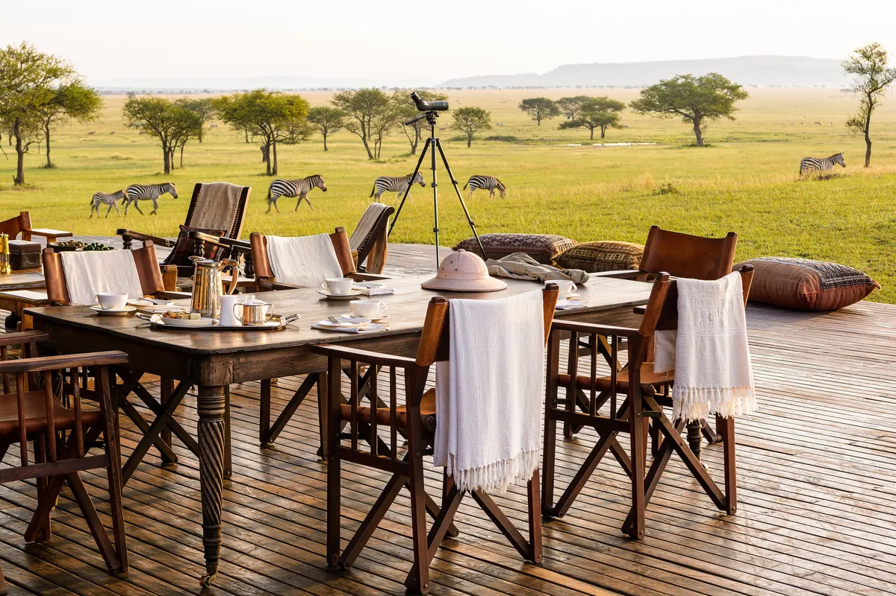

الهجرة الكبرى
أقم في السيرينغيتي قرب المنطقة التي يُتوقّع أن تمرّ بها قطعان النو في موسم سفرك.
تتحرّك القطعان خلال السنة بحثًا عن الماء والمرعى. نبدأ بموعد سفرك، ثم نختار مخيمًا يتيح لك أكثر من جولة في المنطقة نفسها. إذا تغيّر اتجاه القطيع، يمكن للمرشد أن يجرّب مسارًا آخر في الجولة التالية. ويتوقف مشهد عبور النهر على حركة القطعان في ذلك اليوم. يمكن إضافة نغورونغورو في بداية الرحلة أو نهايتها.
خطّط لهذه الرحلة

السفاري وزنجبار
جولات في تارانغيري والسيرينغيتي، ثم بضعة أيام في زنجبار.
تبدأ في تارانغيري، ثم تنتقل إلى السيرينغيتي لتقضي فيه عدة جولات. بعد آخر إقامة في البر، نرتّب الانتقال إلى زنجبار. يمكنك توزيع أيام الجزيرة بين جولة في المدينة الحجرية وإقامة على الشاطئ. يناسب هذا المسار الرفقة التي تريد وقتًا للحيوانات ووقتًا على البحر في الإجازة نفسها.
خطّط لهذه الرحلة

سفاري بالطائرة
رحلات داخلية إلى مهابط قريبة من المخيمات، مع جولات سفاري خاصة بعد الوصول.
نحدّد أولًا أي انتقال برّي يستغرق وقتًا طويلًا، ثم نبحث عن رحلة جوية مناسبة. نوضح لك أين تهبط وكيف تكمل الطريق إلى المخيم. إذا كانت الإجازة قصيرة، يمكن للوقت الذي توفّره في التنقل أن يمنحك جولة إضافية أو يتيح لك البقاء فترة أطول في مخيم واحد.
خطّط لهذه الرحلة

سفاري للعائلة
إقامة أطول في مخيم واحد، مع جولات تناسب أعمار الأطفال ووقت للراحة خلال اليوم.
نبدأ بأعمار الأطفال وبالمدة التي يرتاحون لقضائها في السيارة. نقترح الإقامة عدة ليالٍ في مخيم واحد، بحيث تخرجون للجولات منه وتعودون إليه للغداء أو الراحة. نراجع إمكان الإقامة في خيمة عائلية أو في غرف متقاربة. وتبقى إضافة زنجبار خيارًا إذا أردت أن تقضي العائلة بضعة أيام على الساحل قبل العودة.
خطّط لهذه الرحلة

مخيم خاص لمجموعتك
إقامة في مخيم يمكن تخصيصه لكم بالكامل، بحسب عدد المسافرين وموعد الرحلة.
إذا كنت تسافر مع عائلات أخرى أو مع أصدقاء، يمكن أن يكون المخيم مكانًا تجتمعون فيه على الوجبات وتخرجون منه للجولات. نبحث عن مخيم يمكن تخصيصه لكم، ونراجع عدد الخيام وتوزيعها، وما إذا كنتم تحتاجون إلى أكثر من سيارة. ثم نوضح لك ما يتوافر في موعد السفر.
خطّط لهذه الرحلة